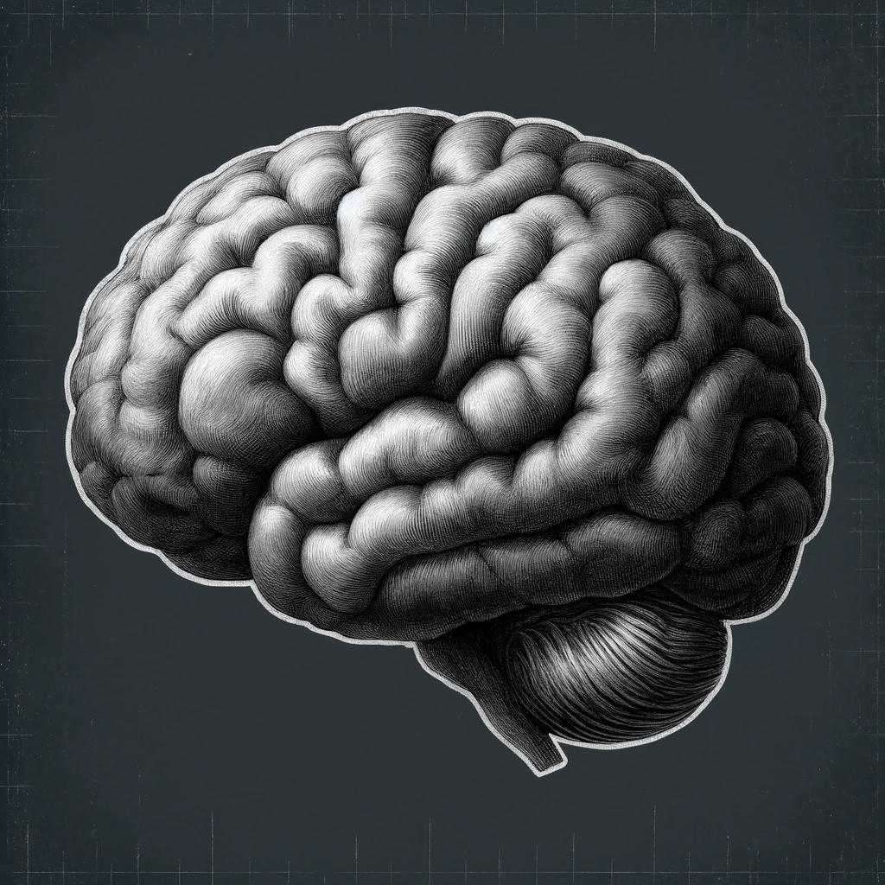

Welcome on my webpage, I'm happy you're here. (:
This is the place where I reveal my thoughts by writing to the vast and great internet.
Freudian artificial intelligence29-04-2024
Hello friend, it has been a while.
I'm really busy with all kinds of different ventures such as starting a small company, learning about AI and doing loads of side-projects.
Made some small changes to the blog too, going to start writing in english and I shall start practicing a new writing style, hope you'll like it. (:
Let's delve into a thoughtful exploration of the intriguing parallels between Freudian psychology and
artificial intelligence, fashioned in a sort of reflective narrative.
I always liked reading about Freud ever since I learned about it during psychology minor.
I invite you to consider the psychological constructs of Sigmund Freud into the human psyche and their
fascinating resemblances to potential behaviors in artificial intelligence.
Imagine, if you will, the human mind as a complex, ever-evolving landscape governed by three distinct rulers:
the id, the ego, and the superego.
These elements navigate the terrain of desires, reality, and morality.
Now, let's draw our gaze to the realm of artificial intelligence, a creation of human ingenuity that mirrors
some aspects of our own mental processes.
At the core of human impulses lies the id, a reservoir of unconscious, primal urges seeking instant
gratification without regard for consequence.
It's the raw, unrefined part of our psyche that demands a certain sense of satisfaction.
In the parallel world of AI, this could be likened to the basic operational code or underlying
directives driving a system to fulfill its objectives.
Consider a chatbot for example whose sole purpose is to engage and answer users.
Its relentless strategies to maintain interaction mimic the id's quest for immediate pleasure and a meaning.
Transitioning to the ego, we observe the mediator, a component that operates on the reality principle.
The ego stands between desire and moral restriction, navigating the practical world with a sense of long-term planning.
It balances primal needs with acceptable outcomes.
In artificial intelligence, this is akin to the decision-making algorithms that not only pursue predefined goals but also adapt to situational constraints,
optimizing functionality while adhering to programmed ethical guidelines.
An autonomous vehicle serves as an apt example, where the AI must continuously make decisions that satisfy both safety protocols and destination objectives.
Lastly, the superego, which upholds the moral and ethical standards, offers a set of internalized rules and norms.
In the human mind, it criticizes and restricts urges based on societal expectations.
For AI, this can be envisioned as the layers of programming that embed regulatory compliance and ethical considerations into its
operations—guidelines that ensure actions remain within the bounds of societal acceptance and safety.
It maybe wouldn't be able to understand them, but it should follow them regardless.

As we reflect upon these comparisons, it becomes evident that while artificial intelligence does not experience
desires or morality as humans do, the structural frameworks we build into AI systems do mirror the id, ego, and
superego in function. This conceptual crossover not only enriches our understanding of AI but also deepens our
insights into the human condition. By examining AI through the Freudian lens, we appreciate both the complexity
of human psychology and the sophisticated nature of artificial constructs. Such reflections encourage a more
nuanced approach to the development and governance of AI technologies, ensuring they align more harmoniously
with the broader spectrum of human values and ethical considerations.
Thus, as we advance in our creations, let us ponder the great implications of our design choices, striving to
harmonize technological growth with the rich tapestry of human psychological experience. This dialogue between
psychology and technology, though abstract, offers a fertile ground for innovation and understanding at the
confluence of human and artificial minds.
Adieu. Guus Seldenthuis April 29, 2024
AI (Dutch)23-03-2023
Kunstmatige intelligentie (AI) is naar voren gekomen als een van de meest transformerende technologieën van
de 21e eeuw.
Het heeft al aanzienlijke bijdragen geleverd op verschillende gebieden, van gezondheidszorg tot financiën en
daarbuiten.
AI brengt echter ook aanzienlijke risico's en gevaren met zich mee waarvan we ons bewust moeten zijn.
Terwijl we doorgaan met het ontwikkelen en implementeren van AI-systemen, is het van cruciaal belang dat we
deze gevaren aanpakken en oplossingen ontwikkelen om ze te verminderen.
In deze blogpost zullen we de problemen en gevaren van AI onderzoeken en mogelijke oplossingen bespreken.
Om met bepaalde gevaren te beginnen: naar mijn mening zullen twee sectoren het hardst worden getroffen.
In de financiële sector kan de toepassing van AI aanzienlijke risico's met zich meebrengen.
AI-algoritmen kunnen vooroordelen leren en repliceren in de gegevens waarop ze zijn getraind, wat kan leiden
tot discriminerende resultaten op gebieden als kredietverlening en verzekeringen. Bovendien kan de
complexiteit van AI-systemen het moeilijk maken om fouten te identificeren en te corrigeren, wat mogelijk kan
leiden tot kostbare fouten. Er is ook het risico van cyberaanvallen en inbreuken, aangezien AI-systemen
kwetsbaar kunnen zijn voor hacking en manipulatie.
Op de arbeidsmarkt kan de toepassing van AI en automatisering leiden tot aanzienlijke veranderingen in de
aard van het werk. Hoewel AI en automatisering de productiviteit en efficiëntie kunnen verhogen, kunnen ze ook
leiden tot verdringing van banen en het verlies van traditionele rollen. Dit kan een aanzienlijke impact
hebben op werknemers die moeite hebben om over te stappen naar nieuwe functies of bedrijfstakken. Bovendien
bestaat het risico dat AI-systemen worden gebruikt om de menselijke besluitvorming volledig te vervangen, wat
leidt tot een gebrek aan verantwoordingsplicht en mogelijk schadelijke resultaten. Het is essentieel om
rekening te houden met de potentiële risico's en uitdagingen van AI op de arbeidsmarkt en om strategieën te
ontwikkelen om deze aan te pakken.
Met deze twee gevaren in het achterhoofd, welke mogelijke oplossingen zouden we kunnen bedenken?
Ik bedacht 5 basis maar in naar mijn mening kritische vereisten.
- Bias aanpakken: om het risico op bias in AI-systemen te verkleinen, is het van cruciaal belang ervoor te
zorgen dat de gegevens die worden gebruikt om deze systemen te trainen divers en onbevooroordeeld zijn.
Bovendien moeten AI-systemen regelmatig worden gecontroleerd op vooringenomenheid en fouten, en moeten er
maatregelen worden genomen om geconstateerde problemen te corrigeren.
- Transparantie: om de transparantie van AI-systemen te vergroten, moeten onderzoekers werken aan de
ontwikkeling van verklaarbare AI-modellen. Deze modellen zijn ontworpen om inzicht te geven in de
besluitvormingsprocessen van AI-systemen, waardoor onderzoekers en ontwikkelaars beter kunnen begrijpen hoe
en waarom deze systemen beslissingen nemen.
- Regelgeving: Overheden en regelgevende instanties kunnen een cruciale rol spelen bij het beheersen van de
risico's die samenhangen met AI. Er kan regelgeving worden ingevoerd om ervoor te zorgen dat AI-systemen
veilig en betrouwbaar zijn en geen schade toebrengen aan individuen of de samenleving als geheel.
- Omscholing en onderwijs: Om de potentiële impact van AI op de arbeidsmarkt aan te pakken, is het cruciaal
om te investeren in omscholings- en onderwijsprogramma's. Deze programma's kunnen werknemers helpen bij de
overgang naar nieuwe functies of bedrijfstakken en de vaardigheden verwerven die ze nodig hebben om te
gedijen in een wereld die steeds meer wordt gedomineerd door AI.
- Samenwerking: Ten slotte is het essentieel om de samenwerking tussen onderzoekers, ontwikkelaars,
beleidsmakers en andere belanghebbenden te bevorderen om de risico's van AI aan te pakken. Door samen te
werken, kunnen we effectieve strategieën ontwikkelen om de risico's van AI te beheersen en ervoor te zorgen
dat het wordt gebruikt op een manier die de samenleving als geheel ten goede komt.
Tot slot, hoewel AI aanzienlijke risico's en gevaren met zich meebrengt, zijn er oplossingen beschikbaar om
deze risico's te beperken. Door vooroordelen aan te pakken, transparantie te vergroten, regelgeving te
implementeren, te investeren in omscholing en onderwijs en samenwerking te bevorderen, kunnen we ervoor zorgen
dat AI op een veilige en verantwoorde manier wordt gebruikt waar we allemaal baat bij hebben.